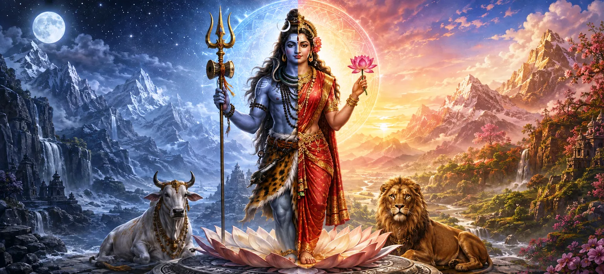

भगवान शिव और देवी पार्वती का पवित्र मिलन आध्यात्मिक दर्शन के सबसे गहरे सत्यों में से एक को उजागर करता है: चेतना और दिव्य ऊर्जा शाश्वत रूप से अविभाज्य हैं। शिव संपूर्ण अस्तित्व में अंतर्निहित मौन, अपरिवर्तनीय जागरूकता है, जबकि शक्ति वह गतिशील शक्ति है जिसके माध्यम से ब्रह्मांड का निर्माण, पालन, परिवर्तन और विलय होता है। उनका मिलन केवल एक दिव्य विवाह नहीं है बल्कि सभी जीवन, आंदोलन, ज्ञान और आध्यात्मिक जागृति की नींव है।
भगवान शिव उस शाश्वत जागरूकता का प्रतिनिधित्व करते हैं जो हर अनुभव के नीचे अपरिवर्तित रहती है। वह जन्म और मृत्यु, रूप और सीमा, सुख और दुःख से परे है। मूक साक्षी के रूप में, शिव शरीर, इंद्रियों, मन और बुद्धि से बंधे बिना उन्हें प्रकाशित करते हैं।
देवी पार्वती शाश्वत शक्ति हैं जिनके माध्यम से चेतना स्वयं को सृजन के रूप में व्यक्त करती है। वह गति, जीवन, बुद्धि, करुणा, पोषण, साहस और परिवर्तन के रूप में मौजूद है। ब्रह्मांड के भीतर काम करने वाली प्रत्येक शक्ति उसकी दिव्य ऊर्जा की अभिव्यक्ति है।
ऊर्जा के बिना चेतना स्थिर और अव्यक्त रहती है, जबकि सचेत दिशा के बिना ऊर्जा में उद्देश्य और जागरूकता का अभाव होता है। इसलिए शिव और शक्ति दो प्रतिस्पर्धी शक्तियाँ नहीं हैं बल्कि एक सर्वोच्च वास्तविकता के दो अविभाज्य पहलू हैं।
अर्धनारीश्वर का रूप शिव और शक्ति को एक दिव्य शरीर के भीतर एकजुट दर्शाता है। एक आधा हिस्सा शिव के रूप में और दूसरा देवी के रूप में प्रकट होता है, जो दर्शाता है कि अस्तित्व के मर्दाना और स्त्री सिद्धांत एक ही अविभाज्य स्रोत से उत्पन्न होते हैं।
शिव और शक्ति के सामंजस्य से सृष्टि का चक्र सही क्रम में चलता रहता है। तत्व उत्पन्न होते हैं, जीवित प्राणियों को चेतना और ऊर्जा प्राप्त होती है, संसार कायम रहता है, और ब्रह्मांडीय संतुलन के नियमों के अनुसार परिवर्तन होता है।
शिव शाश्वत जागरूकता का प्रतिनिधित्व करते हैं जो चुपचाप हर अनुभव को प्रकाशित करता है।
शक्ति वह रचनात्मक शक्ति है जिसके माध्यम से ब्रह्मांड के भीतर चेतना प्रकट होती है।
शिव और शक्ति एक अविभाज्य सर्वोच्च वास्तविकता के अविभाज्य पहलू हैं।
शिव और शक्ति का मिलन भी प्रत्येक व्यक्ति के भीतर विद्यमान है। शिव आंतरिक जागरूकता के रूप में मौजूद हैं, जबकि शक्ति विचार, सांस, भावना, जीवन शक्ति और क्रिया के रूप में कार्य करती है। आध्यात्मिक अनुशासन इन आयामों को सचेतन सामंजस्य में लाने का प्रयास करता है।
जब ऊर्जा ज्ञान द्वारा निर्देशित होती है, तो कार्य धार्मिक हो जाते हैं। जब जागरूकता करुणा से जुड़ी रहती है, तो आध्यात्मिक अंतर्दृष्टि से दुनिया को लाभ होता है। यह आंतरिक संतुलन साधक को शांति और आत्म-ज्ञान खोए बिना जीवन में सक्रिय रूप से भाग लेने की अनुमति देता है।
शिव और शक्ति का मिलन हमें शांति को क्रिया के साथ, ज्ञान को शक्ति के साथ और जागरूकता को करुणा के साथ जोड़ना सिखाता है। आध्यात्मिक संतुलन तब उत्पन्न होता है जब हमारी ऊर्जा एक उच्च उद्देश्य को पूरा करती है और प्रत्येक क्रिया आंतरिक चेतना में निहित रहती है।
सीमित सांसारिक परिप्रेक्ष्य से, शिव और शक्ति दो अलग-अलग दिव्य व्यक्तित्वों के रूप में प्रकट हो सकते हैं। हालाँकि, अनुभूति के उच्चतम स्तर पर, उन्हें पूरक रूपों के माध्यम से प्रकट होने वाली एक वास्तविकता के रूप में समझा जाता है।
जिस प्रकार अग्नि को उसकी गर्मी से और सूर्य को उसके प्रकाश से अलग नहीं किया जा सकता, उसी प्रकार शिव को शक्ति से अलग नहीं किया जा सकता। उनका स्पष्ट भेद सृष्टि को प्रकट होने की अनुमति देता है, जबकि उनकी आवश्यक एकता शाश्वत रूप से अपरिवर्तित रहती है।
ध्यान, भक्ति, निस्वार्थ सेवा और अनुशासित जीवन के माध्यम से साधक धीरे-धीरे अपने भीतर शिव और शक्ति की उपस्थिति को पहचानता है। मन की बेचैन ऊर्जा शांत हो जाती है, जबकि आंतरिक जागरूकता स्पष्ट और अधिक स्थिर हो जाती है।
जब जागरूकता और ऊर्जा में सामंजस्य हो जाता है, तो व्यक्ति और ईश्वर के बीच का झूठा अलगाव ख़त्म होने लगता है। साधक दुनिया के भीतर जिम्मेदारियों को पूरा करते हुए शांति, एकता और स्वतंत्रता का अनुभव करता है।
"शिव चेतना हैं, शक्ति उनकी शक्ति है, और उनका शाश्वत मिलन सारी सृष्टि की पवित्र धड़कन है।"
शिव और शक्ति के शाश्वत मिलन से पता चलता है कि चेतना और दिव्य ऊर्जा सभी अस्तित्व की अविभाज्य नींव हैं। उनका सामंजस्य सृष्टि को कायम रखता है और हर ईमानदार साधक के भीतर आध्यात्मिक ज्ञान जगाता है। भगवान शिव और देवी पार्वती द्वारा देवताओं को दिए गए पवित्र आशीर्वाद की खोज के लिए अगले अध्याय की ओर आगे बढ़ें।